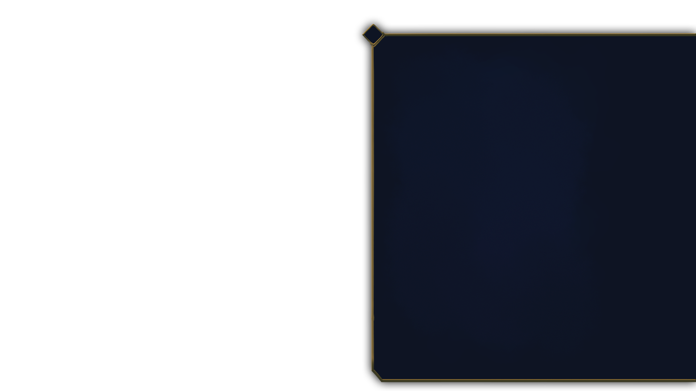
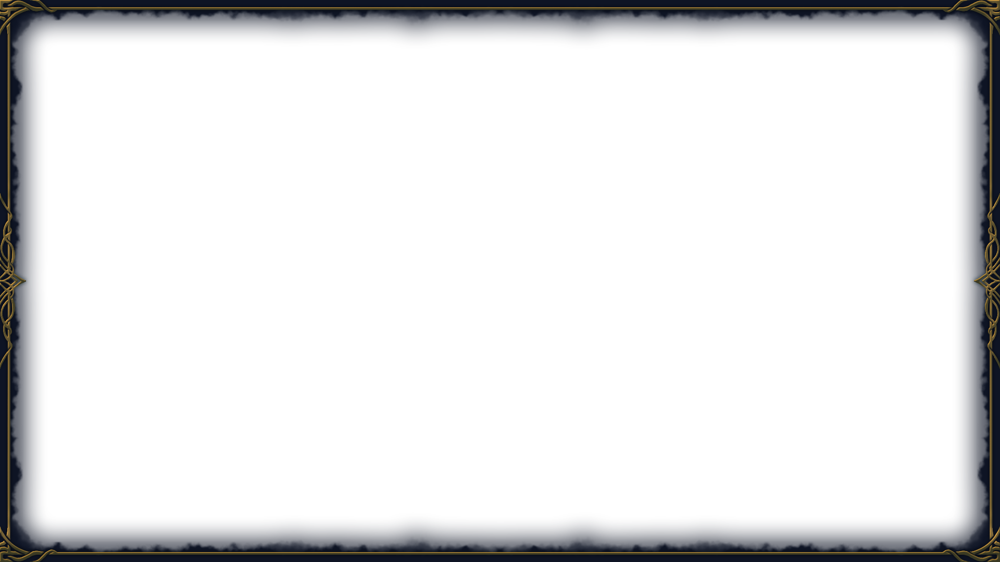
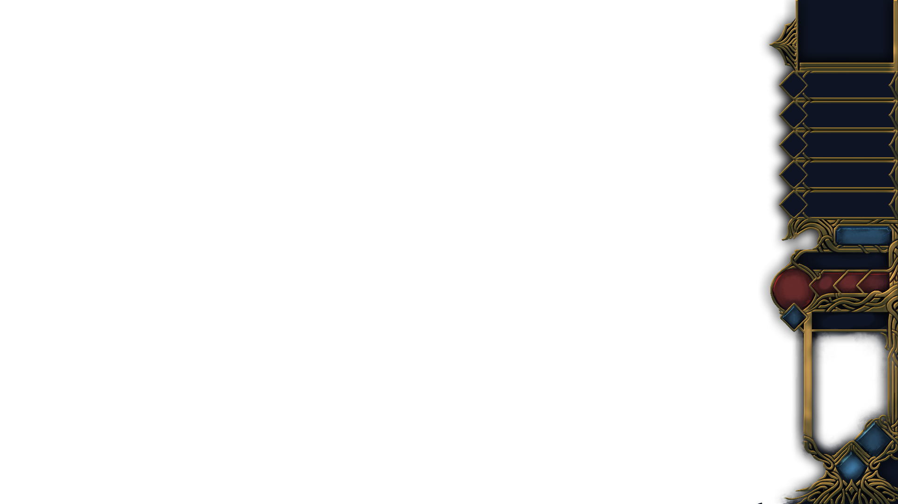

Show widgets
−
+1
+
Paint
Clear
Bright
S
M
L
Thick
Player view: the fog as players see it
Back to LoreMaster (P)
Music is playing. Tap anywhere to hear it.



Log
−
Say
TEMP · CURRENT · MAX
TOTAL
0
LVL

Log
×
Combat
Manual roll
Cancel
This shard has
1
Vitality left.
Strike it
Feed a Skyvault Shard
⟲
Rotate
⟳
GRID
✕
Cell
Fade
Shift X
Shift Y
Line up
Drag the grid
Scenes
Apply to scenes…
Inset
Snap
Testing
Toggle LM role
Toggle combat
Add foe token
Fit map
Kaelo rolls